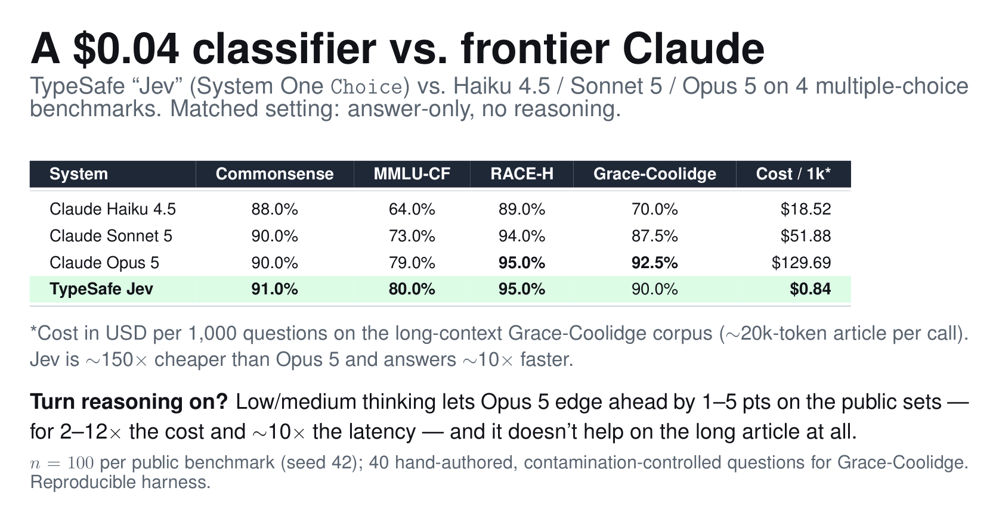

Testing TypeSafe Jev on Text Understanding
A tiny typed classifier matched frontier Claude on multiple-choice accuracy — at roughly 150× lower cost and 10× lower latency.
TL;DR
- I compared TypeSafe’s System One Choice primitive (“Jev”) against the latest Claude models — Haiku 4.5, Sonnet 5, Opus 5 — on four multiple-choice benchmarks.
- In a matched, answer-only setting, Jev is the top system on CommonsenseQA and MMLU-CF, ties Opus 5 on RACE-H, and lands one question behind Opus on a hand-authored corpus.
- On long-context questions it’s ~150× cheaper ($0.84 vs $129.69 per 1,000) and ~10× faster.
- Turning reasoning on lets Opus edge ahead by 1–5 points on the public sets — for 2–12× the cost and ~10× the latency, and no gain on the long article.

Why bother? Benchmarks may be memorized
Public leaderboard numbers for reading-comprehension and knowledge benchmarks are both stale (they predate the current model generation) and potentially contaminated (test items may sit in pretraining data). So rather than trust historical figures, I re-ran the current models myself under one fixed protocol, and added two hedges against contamination: MMLU-CF (an explicitly contamination-free MMLU variant) and Grace-Coolidge, a corpus I hand-authored over a single long Wikipedia article where every wrong answer also appears in the text — so answering requires reading, not recall.
The setup
Four benchmarks: RACE-H (passage-grounded reading comprehension), CommonsenseQA (commonsense knowledge), MMLU-CF (multi-domain knowledge, contamination-free), and Grace-Coolidge (40 hand-authored questions over a ~20k-token article). Every system sees identical items (n = 100 per public benchmark, fixed seed).
Jev is the TypeSafe Choice primitive: state = passage + question, options passed as the choice criteria. Claude is the Anthropic Messages API with a system prompt requesting only the answer letter, run at three reasoning settings: none (thinking disabled), low, and medium. Cost is metered from actual token usage and priced at published rates (per 1M tokens: Jev $0.042 input / $0 output; Haiku 1/5, Sonnet 2/10, Opus 5/25).
Accuracy across all settings
| System | CommonsenseQA | MMLU-CF | RACE-H |
|---|---|---|---|
| Claude Haiku 4.5 | 88.0% | 64.0% | 89.0% |
| Claude Haiku 4.5 (low) | 90.0% | 74.0% | 93.0% |
| Claude Haiku 4.5 (medium) | 90.0% | 75.0% | 94.0% |
| Claude Sonnet 5 | 90.0% | 73.0% | 94.0% |
| Claude Sonnet 5 (low) | 87.0% | 76.0% | 96.0% |
| Claude Sonnet 5 (medium) | 89.0% | 79.0% | 97.0% |
| Claude Opus 5 | 90.0% | 79.0% | 95.0% |
| Claude Opus 5 (low) | 95.0% | 84.0% | 96.0% |
| Claude Opus 5 (medium) | 93.0% | 82.0% | 96.0% |
| TypeSafe Jev | 91.0% | 80.0% | 95.0% |
Among the no-reasoning configurations, Jev leads on CommonsenseQA and MMLU-CF and ties Opus on RACE-H. With reasoning on, Opus (low) and Sonnet (medium) edge ahead by a point or two — see the cost of doing so below.
Cost tells the real story
| System | CommonsenseQA | MMLU-CF | RACE-H |
|---|---|---|---|
| Claude Haiku 4.5 | $0.109 | $0.137 | $0.506 |
| Claude Haiku 4.5 (low) | $1.345 | $1.832 | $2.317 |
| Claude Haiku 4.5 (medium) | $1.683 | $2.464 | $2.961 |
| Claude Sonnet 5 | $0.263 | $0.339 | $1.334 |
| Claude Sonnet 5 (low) | $0.263 | $0.443 | $1.334 |
| Claude Sonnet 5 (medium) | $0.263 | $0.417 | $1.334 |
| Claude Opus 5 | $0.658 | $0.822 | $3.335 |
| Claude Opus 5 (low) | $1.123 | $1.544 | $3.437 |
| Claude Opus 5 (medium) | $1.542 | $2.140 | $3.652 |
| TypeSafe Jev | $0.015 | $0.016 | $0.031 |
Jev bills input tokens only; chat models add $5–$25/1M output on top of costlier input. Note the two thinking APIs price differently: gen-5 adaptive thinking (Sonnet, Opus) spends only the tokens a question needs — often near zero on easy items — while Haiku’s fixed budget thinking spends up to the budget regardless, inflating its cost tenfold for a two-point gain.
The contamination-controlled corpus
Grace-Coolidge supplies the whole article on every call and every distractor is an in-passage, semantically valid name or value. The hard split adds negation, temporal-ordering, and inference questions — several deliberately unanswerable (the correct answer is “Not enough information”).
| System | Accuracy | Avg latency | Cost / 1k |
|---|---|---|---|
| Claude Haiku 4.5 | 70.0% | 962 ms | $18.52 |
| Claude Haiku 4.5 (low) | 90.0% | 3007 ms | $19.79 |
| Claude Haiku 4.5 (medium) | 90.0% | 3431 ms | $20.00 |
| Claude Sonnet 5 | 87.5% | 1548 ms | $51.88 |
| Claude Sonnet 5 (low) | 87.5% | 1524 ms | $51.91 |
| Claude Sonnet 5 (medium) | 85.0% | 1472 ms | $51.90 |
| Claude Opus 5 | 92.5% | 2252 ms | $129.69 |
| Claude Opus 5 (low) | 90.0% | 1960 ms | $129.95 |
| Claude Opus 5 (medium) | 90.0% | 2181 ms | $130.21 |
| TypeSafe Jev | 90.0% | 429 ms | $0.84 |
On the easy split every system except no-reasoning Haiku scores 100%; the hard split is the discriminator. Reasoning’s clearest win here is repairing Haiku’s no-reasoning penalty (70% → 90%); it doesn’t help Sonnet or Opus, and because the article dominates the token bill, turning it on barely moves cost.
Takeaway
For high-volume classification and labeling in production, a small typed primitive can match frontier accuracy at a tiny fraction of the cost and latency. Pay frontier-chat prices for open-ended generation — not for picking one of five options. Reasoning is a real lever for the frontier models on quantitative questions, but it buys a point or two at a steep multiple, and does nothing on long-context reading.